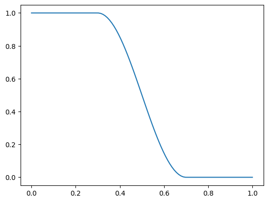
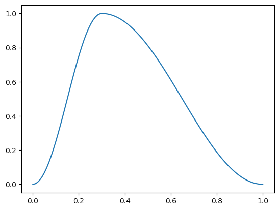
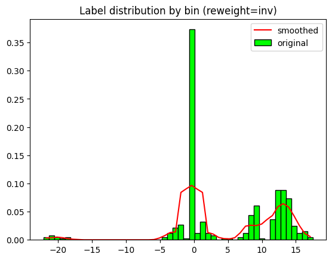
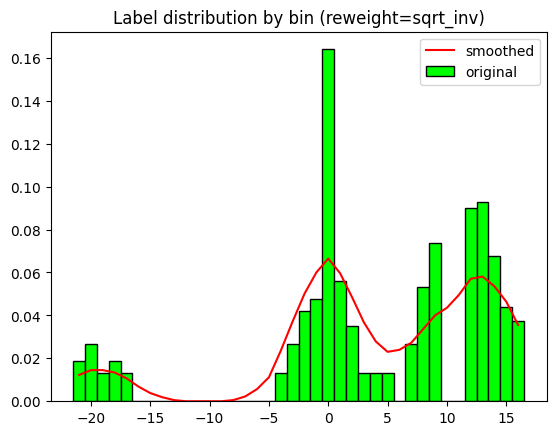

TransformScheduler(SchedCos(1, 0))TransformScheduler(<fastai.callback.schedule._Annealer object>)Miscellaneous callbacks for timeseriesAI.
A callback can implement actions on the following events: * before_fit: called before doing anything, ideal for initial setup. * before_epoch: called at the beginning of each epoch, useful for any behavior you need to reset at each epoch. * before_train: called at the beginning of the training part of an epoch. * before_batch: called at the beginning of each batch, just after drawing said batch. It can be used to do any setup necessary for the batch (like hyper-parameter scheduling) or to change the input/target before it goes in the model (change of the input with techniques like mixup for instance). * after_pred: called after computing the output of the model on the batch. It can be used to change that output before it’s fed to the loss. * after_loss: called after the loss has been computed, but before the backward pass. It can be used to add any penalty to the loss (AR or TAR in RNN training for instance). * before_backward: called after the loss has been computed, but only in training mode (i.e. when the backward pass will be used) * after_backward: called after the backward pass, but before the update of the parameters. It can be used to do any change to the gradients before said update (gradient clipping for instance). * after_step: called after the step and before the gradients are zeroed. * after_batch: called at the end of a batch, for any clean-up before the next one. * after_train: called at the end of the training phase of an epoch. * before_validate: called at the beginning of the validation phase of an epoch, useful for any setup needed specifically for validation. * after_validate: called at the end of the validation part of an epoch. * after_epoch: called at the end of an epoch, for any clean-up before the next one. * after_fit: called at the end of training, for final clean-up.
When writing a callback, the following attributes of Learner are available:
The following attributes are added by TrainEvalCallback and should be available unless you went out of your way to remove that callback: * train_iter: the number of training iterations done since the beginning of this training * pct_train: from 0. to 1., the percentage of training iterations completed * training: flag to indicate if we’re in training mode or not
The following attribute is added by Recorder and should be available unless you went out of your way to remove that callback: * smooth_loss: an exponentially-averaged version of the training loss
TransformScheduler (schedule_func:<built-infunctioncallable>, show_plot:bool=False)
A callback to schedule batch transforms during training based on a function (sched_lin, sched_exp, sched_cos (default), etc)
TransformScheduler(SchedCos(1, 0))TransformScheduler(<fastai.callback.schedule._Annealer object>)p = torch.linspace(0.,1,100)
f = combine_scheds([0.3, 0.4, 0.3], [SchedLin(1.,1.), SchedCos(1.,0.), SchedLin(0.,.0), ])
plt.plot(p, [f(o) for o in p]);
p = torch.linspace(0.,1,100)
f = combine_scheds([0.3, 0.7], [SchedCos(0.,1.), SchedCos(1.,0.)])
plt.plot(p, [f(o) for o in p]);
ShowGraph (plot_metrics:bool=True, final_losses:bool=True, perc:float=0.5)
(Modified) Update a graph of training and validation loss
SaveModel (monitor='valid_loss', comp=None, min_delta=0.0, fname='model', every_epoch=False, at_end=False, with_opt=False, reset_on_fit=True, verbose=False)
A TrackerCallback that saves the model’s best during training and loads it at the end with a verbose option.
This process shows an example of how the weights could be calculated. This particular regression method was published in:
Yang, Y., Zha, K., Chen, Y. C., Wang, H., & Katabi, D. (2021). Delving into Deep Imbalanced Regression. arXiv preprint arXiv:2102.09554.
(https://arxiv.org/pdf/2102.09554.pdf)
prepare_LDS_weights (labels, n_bins=None, label_range=None, reweight='inv', lds_kernel='gaussian', lds_ks=9, lds_sigma=1, max_rel_weight=None, show_plot=True)
get_lds_kernel_window (lds_kernel='gaussian', lds_ks=9, lds_sigma=1)
*Function to determine the label distribution smoothing kernel window
lds_kernel (str): LDS kernel type lds_ks (int): LDS kernel size (should be an odd number). lds_sigma (float): LDS gaussian/laplace kernel sigma*
labels = np.concatenate([np.random.normal(-20, 1, 10), np.random.normal(0, 2, 100), np.random.normal(12, 2, 300)], -1)
labels[(-1<labels) & (labels<1)] = 0 # This is done to create some 'gaps' for demo purposes
labels[(10<labels) & (labels<12)] = 0 # This is done to create some 'gaps' for demo purposes
n_bins = 50
label_range=None
reweight = 'inv'
lds_kernel='gaussian'
lds_ks=5
lds_sigma=2
weights_per_sample = prepare_LDS_weights(labels, n_bins, label_range=label_range, reweight=reweight,
lds_kernel=lds_kernel, lds_ks=lds_ks, lds_sigma=lds_sigma, show_plot=True)
n_bins = 50
label_range=None
reweight = 'sqrt_inv'
lds_kernel='gaussian'
lds_ks=5
lds_sigma=2
weights_per_sample = prepare_LDS_weights(labels, n_bins, label_range=label_range, reweight=reweight,
lds_kernel=lds_kernel, lds_ks=lds_ks, lds_sigma=lds_sigma, show_plot=True)
n_bins = None
label_range=None
reweight = 'sqrt_inv'
lds_kernel='triang'
lds_ks=9
lds_sigma=1
weights_per_sample = prepare_LDS_weights(labels, n_bins, label_range=label_range, reweight=reweight,
lds_kernel=lds_kernel, lds_ks=lds_ks, lds_sigma=lds_sigma, show_plot=True)


WeightedPerSampleLoss (instance_weights)
Basic class handling tweaks of the training loop by changing a Learner in various events
BatchSubsampler (sample_pct:Optional[float]=None, step_pct:Optional[float]=None, same_seq_len:bool=True, update_y:bool=False)
*Callback that selects a percentage of samples and/ or sequence steps with replacement from each training batch
sample_pct: percentage of random samples (or instances) that will be drawn. If 1. the output batch will contain the same number of samples as the input batch. step_pct: percentage of random sequence steps that will be drawn. If 1. the output batch will contain the same number of sequence steps as the input batch. If used with models that don’t use a pooling layer, this must be set to 1 to keep the same dimensions. With CNNs, this value may be different. same_seq_len: If True, it ensures that the output has the same shape as the input, even if the step_pct chosen is < 1. Defaults to True. update_y: used with step_pct. If True, it applies the same random indices to y. It can only be used with sequential targets.*